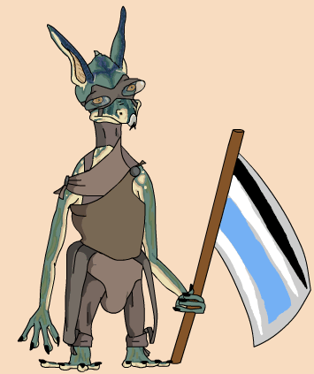

| Classification | Xamster |
| Gender | Male |
| Height | 3'6'' |
| Home World | Xegobah |
| Podracer | Farwan & Glott FG 8T8-Twin Block2 Special |
Neva Kee had a radically different pod than your typical podracer. His vehicle was one solid piece with the engines connected to the side of the cockpit. This gave Neva Kee better control as well as attracting a fan base. His large fan base prevented him from being banned from podracing, despite the wishes of racing traditionalists. On the second lap of the Boonta Eve podrace, Neva Kee flew his pod off course on the Hutt flats and was never seen again.
Clothing in picture based on official concept art